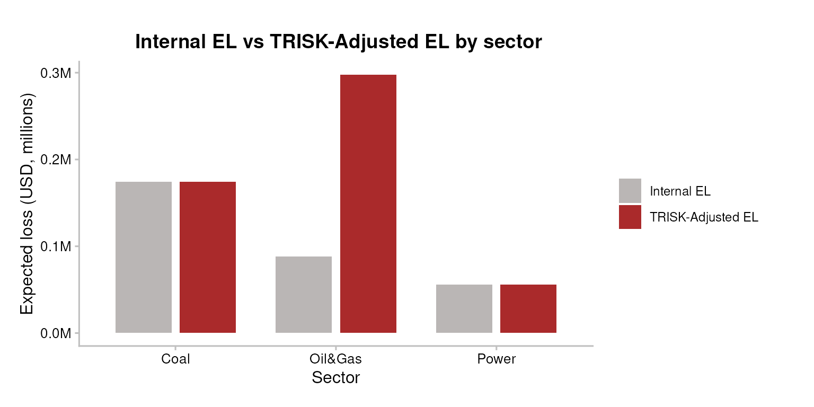

PD and EL Integration
Overview
TRISK recomputes probability of default (PD) from a Merton structural credit model under a climate-transition shock. That model PD is not directly comparable to the internal PD your institution already carries: levels differ by calibration, rating philosophy, and point-in-time vs through-the-cycle treatment. Only the baseline-to-shock change carries portable meaning.
integrate_pd() and integrate_el() translate
that TRISK shift onto your own internal scale, using one of three
methods (zscore, the default; absolute;
relative). This vignette covers the maths, a worked numeric
example, the input schema, the seven pipeline plots/tables, and the
limitations a credit-risk analyst should keep in mind.
Audience: an analyst who already knows PD / EL / IFRS-9 but is new to TRISK.
Inputs
Portfolio file schema
Integration needs the bank’s own PD per exposure, so it runs on the
augmented portfolio file
portfolio_ids_internal_pd_testdata.csv — the classic
portfolio_ids_testdata.csv plus a mandatory
internal_pd column.
| Column | Type | Meaning |
|---|---|---|
company_id |
int | Counterparty key; joins TRISK output to internal PD. |
company_name |
chr | Display label (may be NA). |
sector |
chr | TRISK sector (e.g. Oil&Gas, Coal,
Power). |
technology |
chr | Production technology within the sector. |
country_iso2 |
chr | ISO-2 country code of the asset. |
exposure_value_usd |
dbl | Exposure / outstanding, USD. Used as the EAD basis. |
term |
int | Loan term in years. |
loss_given_default |
dbl | LGD as a fraction in [0, 1]. |
internal_pd |
dbl | Bank’s own PD per exposure, in [0, 1].
Mandatory.
|
internal_pd is mandatory because integration is
meaningless without a bank number to integrate the TRISK shift into —
the setup below fails loudly if it is missing or out of range. Internal
EL is derived, not stored:
internal_el = EAD * LGD * internal_pd (see the EL
section).
assets_testdata <- read.csv(system.file("testdata", "assets_testdata.csv", package = "trisk.model"))
scenarios_testdata <- read.csv(system.file("testdata", "scenarios_testdata.csv", package = "trisk.model"))
fin_testdata <- read.csv(system.file("testdata", "financial_features_testdata.csv", package = "trisk.model"))
carbon_testdata <- read.csv(system.file("testdata", "ngfs_carbon_price_testdata.csv", package = "trisk.model"))
portfolio_ids_internal_pd <- read.csv(system.file("testdata", "portfolio_ids_internal_pd_testdata.csv",
package = "trisk.analysis"))
stopifnot(
"Portfolio file must include an `internal_pd` column per exposure." =
"internal_pd" %in% colnames(portfolio_ids_internal_pd),
"`internal_pd` values must be numeric in [0, 1]." =
is.numeric(portfolio_ids_internal_pd$internal_pd) &&
all(portfolio_ids_internal_pd$internal_pd >= 0 &
portfolio_ids_internal_pd$internal_pd <= 1, na.rm = TRUE)
)The three integration methods
Let p_int be the internal PD, p_base the
TRISK baseline PD, and p_shock the TRISK shock PD for a
given exposure. Each method returns an adjusted PD
p_adj, then integrate_pd() clips it to
[0, 1].
Absolute — add the raw PD shift onto the internal PD:
Relative — scale the internal PD by the proportional shift:
When p_base = 0 the relative method returns
p_int unchanged — the shock signal is lost on zero-baseline
rows. Prefer absolute or zscore there.
Z-score (default) — recombine the three PDs in
normal-quantile (probit) space. With
the standard-normal CDF and
its quantile function, and clipping each PD to
[zscore_floor, zscore_cap] before the quantile:
This is a probit / Merton-style recombination of default thresholds, not the Basel IRB risk-weight formula. It adds the TRISK shock-minus-baseline distance-to-default shift to the internal PD’s implied default threshold, then maps back to a probability. It is the right default because it is zero-safe (via clipping), it preserves the non-linear compression of PDs near the distribution tails, and it behaves sensibly on sparse portfolios where Merton inputs drive some baseline PDs to underflow. It does not invoke the Basel asset-correlation / Vasicek conditional-PD capital formula — there is no correlation parameter and no supervisory confidence level here.
The zscore_floor (default 1e-4) and
zscore_cap (default 1 - 1e-4) parameters bound
the PDs before qnorm(), since qnorm(0) = -Inf
and qnorm(1) = +Inf would otherwise propagate infinities.
Widen the floor toward zero only if your internal PDs are reliably
calibrated that low; tighten it to de-sensitise the tails.
Worked example: one row through z-score
Take a single Oil&Gas exposure with
internal_pd = 0.025, and suppose TRISK returns
pd_baseline = 0.020 and pd_shock = 0.060 for
it. None of the three values hit the clip bounds, so:
z_int <- qnorm(0.025) # internal
z_base <- qnorm(0.020) # TRISK baseline
z_shk <- qnorm(0.060) # TRISK shock
p_adj <- pnorm(z_int + z_shk - z_base)
round(c(z_internal = z_int, z_baseline = z_base, z_shock = z_shk,
adjusted_pd = p_adj, adjustment_pp = (p_adj - 0.025) * 100), 4)
#> z_internal z_baseline z_shock adjusted_pd adjustment_pp
#> -1.9600 -2.0537 -1.5548 0.0720 4.7009The probit shift z_shk - z_base is positive (the shock
raises model PD), so the recombined internal PD rises above 0.025 — a
worsening, which the plots below render red.
Minimal example
Run TRISK on the portfolio
The internal_pd column rides along on the standard
portfolio schema; we keep it as a separate lookup table to feed into
integrate_pd().
analysis_data <- run_trisk_on_portfolio(
assets_data = assets_testdata,
scenarios_data = scenarios_testdata,
financial_data = fin_testdata,
carbon_data = carbon_testdata,
portfolio_data = portfolio_ids_internal_pd,
baseline_scenario = "NGFS2023GCAM_CP",
target_scenario = "NGFS2023GCAM_NZ2050",
scenario_geography = "Global"
)
#> -- Start Trisk-- Retyping Dataframes.
#> -- Processing Assets and Scenarios.
#> -- Transforming to Trisk model input.
#> -- Calculating baseline, target, and shock trajectories.
#> -- Applying zero-trajectory logic to production trajectories.
#> -- Calculating net profits.
#> Joining with `by = join_by(asset_id, company_id, sector, technology)`
#> -- Calculating market risk.
#> -- Calculating credit risk.
# The internal_pd lookup used throughout the rest of the vignette. TRISK returns
# company_id as character, so coerce the lookup key to match and keep the join
# on like types (read.csv reads it as integer).
internal_pd_lookup <- portfolio_ids_internal_pd[, c("company_id", "internal_pd")]
internal_pd_lookup$company_id <- as.character(internal_pd_lookup$company_id)| company_id | sector | technology | term | pd_baseline | pd_shock | net_present_value_baseline | net_present_value_shock |
|---|---|---|---|---|---|---|---|
| 101 | Oil&Gas | Gas | 3 | 1.10e-06 | 0.0004647 | 51951.82 | 13549.28 |
| 102 | Coal | Coal | 1 | 0.00e+00 | 0.0000000 | 13648160.57 | 4317747.56 |
| 103 | Oil&Gas | Gas | 5 | 8.09e-05 | 0.0012524 | 27724344.25 | 12420187.12 |
| 104 | Power | RenewablesCap | 4 | 3.20e-06 | 0.0000003 | 141635910.26 | 202554984.40 |
Integrate PD — three methods
result_abs <- integrate_pd(analysis_data,
internal_pd = internal_pd_lookup,
method = "absolute")
result_rel <- integrate_pd(analysis_data,
internal_pd = internal_pd_lookup,
method = "relative")
# zscore is the default; explicit here for clarity.
result_zs <- integrate_pd(analysis_data,
internal_pd = internal_pd_lookup,
method = "zscore")| company_id | sector | internal_pd | pd_baseline | pd_shock | trisk_adjusted_pd | pd_adjustment |
|---|---|---|---|---|---|---|
| 101 | Oil&Gas | 0.025 | 1.10e-06 | 0.0004647 | 0.0603323 | 0.0353323 |
| 102 | Coal | 0.040 | 0.00e+00 | 0.0000000 | 0.0400000 | 0.0000000 |
| 103 | Oil&Gas | 0.030 | 8.09e-05 | 0.0012524 | 0.1181008 | 0.0881008 |
| 104 | Power | 0.015 | 3.20e-06 | 0.0000003 | 0.0150000 | 0.0000000 |
You can also override internal PDs on the fly — pass a numeric vector
of length nrow(analysis_data) (or an alternate lookup) for
a sanity-check stress:
flat_internal <- rep(0.03, nrow(analysis_data))
result_custom <- integrate_pd(analysis_data,
internal_pd = flat_internal,
method = "zscore")Integrate EL
integrate_el() needs expected_loss_baseline
/ expected_loss_shock, which
run_trisk_on_portfolio() does not emit on its own — call
compute_analysis_metrics() first to derive them as
EAD * PD. For the bank’s internal EL we use the same
identity: internal_el = EAD * LGD * internal_pd.
analysis_data_el <- compute_analysis_metrics(analysis_data)
internal_el_lookup <- merge(
analysis_data_el[, c("company_id", "exposure_value_usd", "loss_given_default")],
internal_pd_lookup,
by = "company_id"
)
# Positive magnitude, matching the package-wide EL convention.
internal_el_lookup$internal_el <-
internal_el_lookup$exposure_value_usd *
internal_el_lookup$loss_given_default *
internal_el_lookup$internal_pd
result_el <- integrate_el(
analysis_data_el,
internal_el = internal_el_lookup[, c("company_id", "internal_el")]
)
# default method is "zscore": effective-PD probit recombination, zero-safe.Interpretation
EL sign convention, LGD, EAD, horizon
-
EL sign convention. All
expected_loss_*columns and all threeintegrate_el()methods store EL as a positive magnitude. Direction lives in the adjustment, not the level: a positive EL adjustment means more expected loss = worse = rendered red; a negative adjustment means less loss = better = green. The PD adjustment follows the same rule (positive = PD rose = red). -
EAD. The
exposure_at_defaultcolumn is not raw exposure.compute_analysis_metrics()defines it asexposure_value_usd * loss_given_default— i.e. LGD is already folded in. Everyexpected_loss_*column is thenexposure_at_default * pd. The EL zscore method uses thisexposure_at_defaultcolumn as its denominator when present, otherwise reconstructs it asexposure_value_usd * loss_given_default. -
LGD.
loss_given_defaultis the fraction lost on default, in[0, 1]. Because it is already baked intoexposure_at_default, expected loss isEL = exposure_at_default * PD(equivalentlyexposure_value_usd * LGD * PD). The EL zscore method back-transforms EL to an effective PD via|EL| / exposure_at_default, recombines in probit space, then re-scales — so LGD enters only through that denominator. -
Horizon. TRISK PDs here are
term-structured to the loan
term(multi-year), not a 12-month point-in-time PD. Treat the integrated PD/EL as a lifetime / multi-year quantity, closer in spirit to an IFRS-9 Stage 2/3 lifetime ECL input than to a 12-month regulatory PD. Do not feed it directly into a 12-month-PD slot without re-annualising.
The seven pipeline artefacts
The pipeline ships seven ready-made plots/tables. Each has a one-line “when to use”.
N1 — PD method comparison. The three methods overlaid: a black tick for the internal PD, a coloured shape per method for its adjusted PD. Wide spread means the choice of method moves the number a lot. When to use: the methodology choice is on the table (committee review, regulator pushback). Tight clustering means picking a method is a non-decision.
pipeline_crispy_pd_method_comparison(analysis_data,
internal_pd = internal_pd_lookup)
On sparse portfolios, granularity = "firm" and
scale = "pseudo_log" open up the per-firm picture when
sector aggregation or Merton underflow collapses everything against the
axis:
pipeline_crispy_pd_method_comparison(
analysis_data,
internal_pd = internal_pd_lookup,
granularity = "firm",
scale = "pseudo_log"
)
N2 — PD waterfall. Per-sector decomposition: Internal -> signed Adjustment -> Adjusted. The middle bar flips fill on sign (red worsens, green improves), so the “before, change, after” reads at a glance. When to use: non-quantitative audiences read waterfalls faster than grouped bars; the message is “how much does integration move PD”.
pipeline_crispy_pd_waterfall(result_zs)
P1 — PD integration bars. Four bars per group:
Internal PD, TRISK Baseline, TRISK Shock, TRISK-Adjusted PD. The gap
between Internal and Adjusted is the integration effect; Baseline and
Shock show where the model itself moved. When to use: first plot to
show a counterparty — “what happens to my PDs if I integrate TRISK?”
Supports granularity = "firm" /
scale = "pseudo_log".
pipeline_crispy_pd_integration_bars(result_zs)
pipeline_crispy_pd_integration_bars(
result_zs,
granularity = "firm",
scale = "pseudo_log"
)
P2 — EL adjustment bars. Horizontal bars of the signed EL delta (Adjusted minus Internal) by sector. Red = integration says expect more loss than your own model; green = less. Levels are not on this plot — only the adjustment. When to use: the question is sign and magnitude of EL impact by sector — “where does TRISK think you’re under-reserving?”
pipeline_crispy_el_adjustment_bars(result_el)
P3a — PD KPI table. One-row portfolio summary: weighted internal PD, weighted adjusted PD, the adjustment in pp, and direction. When to use: top of a report or first slide; portfolio-level headline only.
pipeline_crispy_pd_kpi_table(result_zs$aggregate)| Total Exposure (USD) | Weighted Internal PD | Weighted Adjusted PD | Weighted PD Adjustment (pp) | Adjustment % |
|---|---|---|---|---|
| 21.06M | 2.592% | 4.461% | +1.868 pp | 72.077% |
P3b — EL KPI table. One-row EL summary including the
bps metric (EL / EAD). The bps figure is
scale-free and travels best across audiences. When to use: same as
P3a but for EL; the bps delta is the single best headline
number.
pipeline_crispy_el_kpi_table(result_el$aggregate)| Total Exposure (USD) | Total Internal EL | Total Adjusted EL | EL Adjustment | Adjusted EL (bps) |
|---|---|---|---|---|
| 21.06M | 318.1K | 527.8K | 209.7K | 250.6 bps |
P4 — EL sector breakdown. One row per sector: exposure, internal EL, adjusted EL, delta, direction arrow, and EL/EAD in bps. Sits between P2 (deltas only) and P3b (one number). When to use: the reference table for any EL discussion; the bps column makes sectors with different exposure magnitudes comparable.
pipeline_crispy_el_sector_breakdown_table(result_el$portfolio)| sector | Direction | Count | Exposure | Internal EL | Adjusted EL | EL Adjustment | EL/EAD (bps) |
|---|---|---|---|---|---|---|---|
| Coal |
|
1 | 6.23M | 174.4K | 174.4K | 0.00 | 280.0 bps |
| Oil&Gas | ↑ | 2 | 5.57M | 88.1K | 297.8K | 209.7K | 534.9 bps |
| Power |
|
1 | 9.26M | 55.6K | 55.6K | 0.00 | 60.0 bps |
Reading order for a bank-facing report: P3a + P3b (headline), then N2 + P2 (the change story), then P1 + P4 (full reference levels), and N1 only if the method choice is being questioned.
Custom views
The pipeline plots cover the standard story; a couple of custom chunks round it out. Expected loss by sector, baseline vs shock:
el_by_sector <- analysis_data_el %>%
dplyr::group_by(sector) %>%
dplyr::summarise(
baseline = sum(.data$expected_loss_baseline, na.rm = TRUE),
shock = sum(.data$expected_loss_shock, na.rm = TRUE),
.groups = "drop"
) %>%
tidyr::pivot_longer(
cols = c("baseline", "shock"), names_to = "scenario", values_to = "el"
)
ggplot2::ggplot(el_by_sector,
ggplot2::aes(x = sector, y = .data$el, fill = .data$scenario)) +
ggplot2::geom_col(position = ggplot2::position_dodge(width = 0.8),
width = 0.7) +
ggplot2::scale_y_continuous(labels = scales::label_number(scale = 1e-6, suffix = "M")) +
ggplot2::scale_fill_manual(values = c(baseline = "#5D9324", shock = "#F53D3F")) +
TRISK_PLOT_THEME_FUNC() +
ggplot2::labs(x = "Sector", y = "Expected loss (USD, millions)",
fill = "Scenario",
title = "Expected loss by sector: baseline vs shock")
Internal EL vs TRISK-Adjusted EL, per sector (both are positive magnitudes):
el_compare_sector <- result_el$portfolio %>%
dplyr::group_by(sector) %>%
dplyr::summarise(
`Internal EL` = sum(.data$internal_el, na.rm = TRUE),
`TRISK-Adjusted EL` = sum(.data$trisk_adjusted_el, na.rm = TRUE),
.groups = "drop"
) %>%
tidyr::pivot_longer(
cols = c("Internal EL", "TRISK-Adjusted EL"),
names_to = "el_type", values_to = "el"
)
ggplot2::ggplot(el_compare_sector,
ggplot2::aes(x = sector, y = .data$el, fill = .data$el_type)) +
ggplot2::geom_col(position = ggplot2::position_dodge(width = 0.8),
width = 0.7) +
ggplot2::scale_y_continuous(labels = scales::label_number(scale = 1e-6, suffix = "M")) +
ggplot2::scale_fill_manual(values = c(`Internal EL` = "#BAB6B5",
`TRISK-Adjusted EL` = "#AA2A2B")) +
TRISK_PLOT_THEME_FUNC() +
ggplot2::labs(x = "Sector", y = "Expected loss (USD, millions)",
fill = "",
title = "Internal EL vs TRISK-Adjusted EL by sector")
Caveats / Limitations
- PD level is not portable; only the shift is. TRISK’s Merton PD level is calibration-specific. The integration deliberately transports the baseline-to-shock change, not TRISK’s absolute PD.
-
Zero-baseline rows lose signal under
relative. Whenpd_baseline = 0the relative method returns the internal PD unchanged. Useabsoluteorzscoreif that matters for your book. -
Clipping biases the extreme tails.
zscore_floor/zscore_capbound PDs beforeqnorm(). Values that should sit below the floor (or above the cap) are pulled in, so the recombination is approximate at the extremes. - Z-score is probit recombination, not Basel IRB. It does not apply the Basel asset-correlation / Vasicek conditional-PD capital formula. There is no correlation parameter and no supervisory confidence level. Do not present its output as a regulatory capital number.
- Horizon mismatch. Integrated PD/EL is term-structured (multi-year), closer to lifetime ECL than to a 12-month regulatory PD. Re-annualise before using it in a 12-month slot.
-
EL zscore EAD basis must match. The effective-PD
round-trip is only correct when the EL columns and the EAD denominator
are on the same basis. If
compute_analysis_metrics()has scaled EAD by NPV share, supply the matchingexposure_at_defaultcolumn rather than relying on theexposure_value_usd * loss_given_defaultfallback. -
internal_pdmust be in[0, 1]and joinable bycompany_id. Unmatchedcompany_ids fall back topd_baselinewith a warning; check the warning before trusting the result.